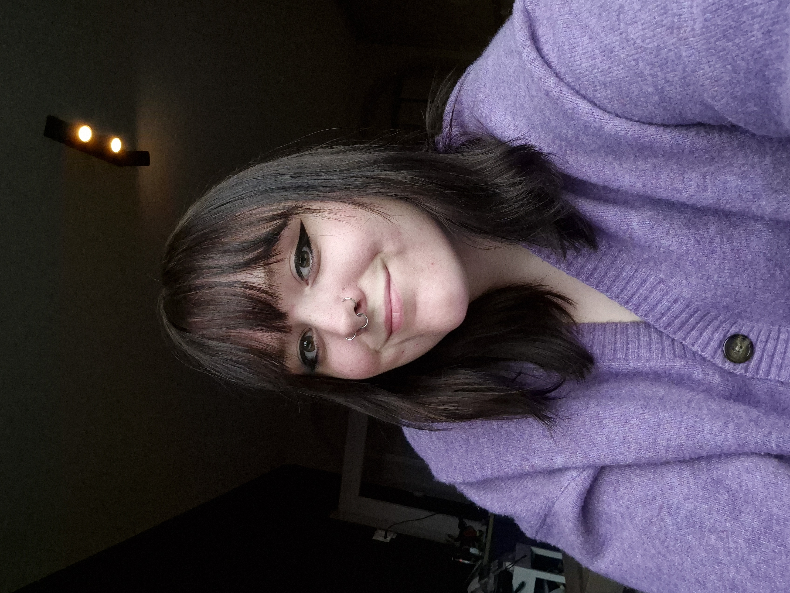
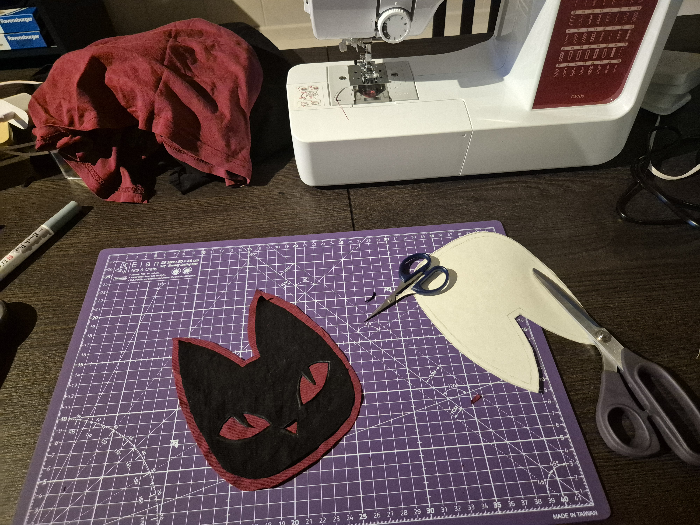
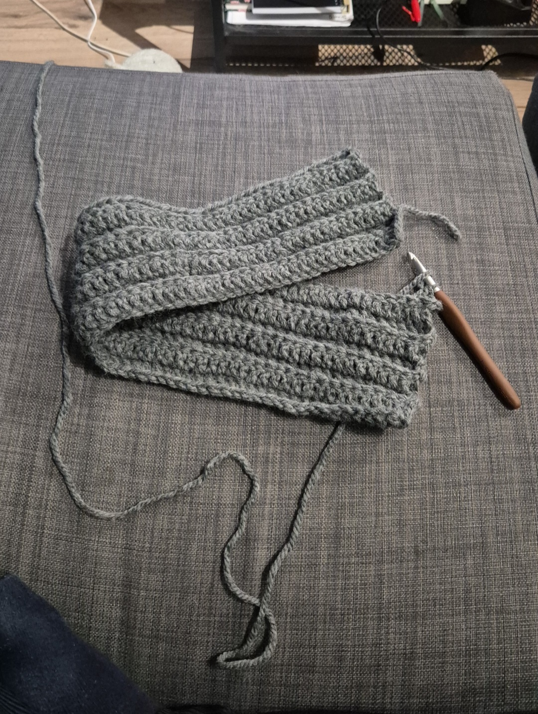
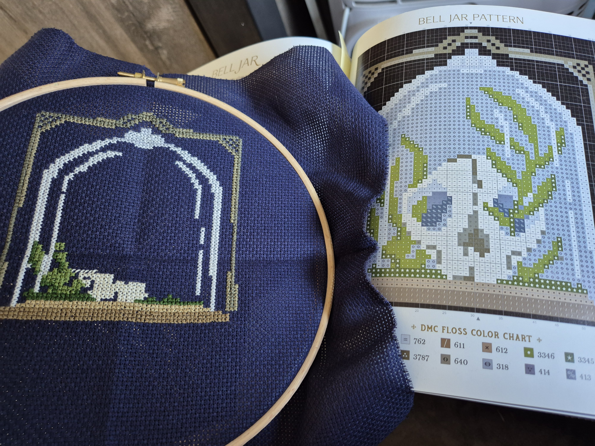
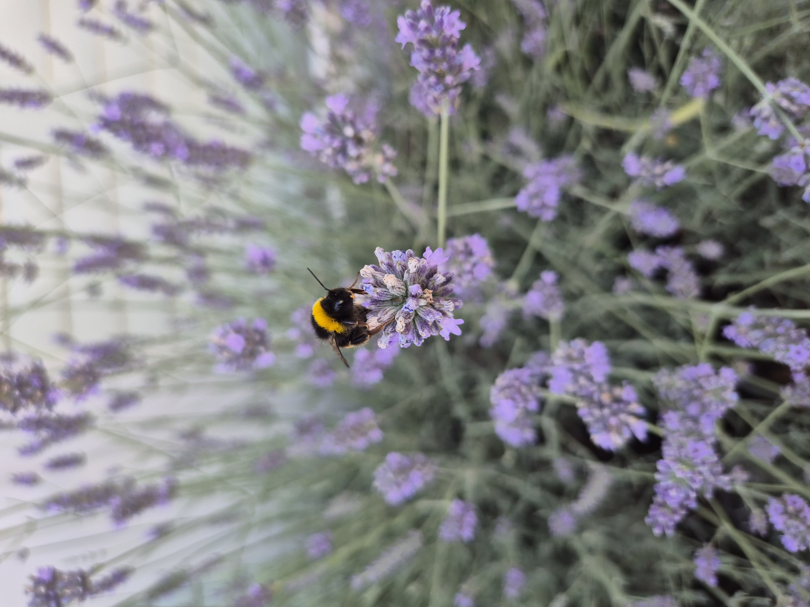

HI, I'M
JAYDEY.
Ik ben Jaydey, een CMD-student met een passie voor interaction design, visual design en het maken van digitale ervaringen.
CMD STUDENT · UI/UX · VISUAL DESIGN BASED IN THE NETHERLANDS
A LITTLE
ABOUT
MY WORK.
Ik vind het interessant om te ontdekken hoe design ervoor kan zorgen dat digitale producten niet alleen goed werken, maar ook prettig en menselijk aanvoelen.
Tijdens mijn opleiding werk ik graag op het snijvlak van interaction design, visual design en technologie. Ik vind het leuk om ideeën te onderzoeken, uit te werken en uiteindelijk iets tastbaars te maken.
BEKIJK MIJN WERK ↗ABOUT ME.
Voordat ik aan CMD begon, heb ik mbo Vormgeving gevolgd. Hier heb ik veel geleerd en ontdekt wat ik leuk vind binnen design. Deze ervaring heeft mij gemotiveerd om verder te leren en mezelf verder te ontwikkelen.
Ik ben nieuwsgierig en vind het leuk om nieuwe dingen te leren, nieuwe ideeën te ontdekken en dingen uit te proberen.
A FEW THINGS
I'VE MADE.
VIEW ALL WORK
↗

HAAK-APP
Een mobiele app die haken toegankelijker en overzichtelijker maakt.

CONTENT DELIVERY
Een dashboardconcept voor het overzichtelijk presenteren van data en inzichten.

BOEKENZOEKER
Een digitale ervaring om boeken te ontdekken en passende keuzes te maken.

SMARTDESK
Een concept voor een slim bureau waarin fysieke, digitale en contextuele interacties samenkomen.
THINGS I LIKE
TO WORK ON.
INTERACTION
DESIGN
✦
VISUAL
DESIGN
✦
UX / UI
DESIGN
✦
I LIKE
MAKING
THINGS.
Naast digitale producten vind ik het leuk om met mijn handen bezig te zijn en verschillende creatieve dingen uit te proberen.
Ik ben vaak bezig met iets nieuws maken, uitproberen of vastleggen. Van een borduurwerk tot een foto die ik onderweg tegenkom.




LET'S MAKE
SOMETHING.
Op zoek naar een stagiair die graag meedenkt, onderzoekt en dingen maakt?
JOUWMAIL@EMAIL.COM ↗